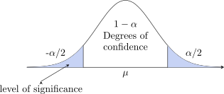
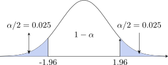

2.1 The Four Distributions You Will Need
Everything that follows – confidence intervals, hypothesis tests, analysis of variance, regression – is built from four distributions. They are introduced together here because the hardest part is not the arithmetic but knowing which one applies, and that is easier to see when they are side by side.
2.1.1 The normal distribution
A continuous variable \(X\) with mean \(\mu \) and variance \(\sigma ^2\) is normal, written \(X\sim N(\mu ,\sigma ^2)\), if its curve is the familiar symmetric bell centred at \(\mu \). Its properties:
- 1.
- It is symmetric about \(\mu \), so mean, median and mode coincide there.
- 2.
- The total area under the curve is 1, and \(\sigma \) controls the spread – a larger \(\sigma \) gives a flatter, wider curve.
- 3.
- Probabilities are areas: \(P(a<X<b)\) is the area under the curve between \(a\) and \(b\).
There is a different normal curve for every pair \((\mu ,\sigma )\), so tables for each are out of the question. Instead we standardise: \[Z=\frac {X-\mu }{\sigma } \sim N(0,1).\] \(Z\) counts how many standard deviations a value sits from its mean, which is a pure number with no units. The standard normal \(N(0,1)\) is centred at 0 with \(P(Z<0)=P(Z>0)=0.5\), and it is the one distribution that needs tabulating.
The notation \(Z_{\alpha }\) means the value with area \(\alpha \) to its right, so \(P(Z>Z_{\alpha })=\alpha \). The ones worth knowing by heart are \[Z_{0.05}=1.645, \qquad Z_{0.025}=1.96, \qquad Z_{0.005}=2.576,\] which give the \(90\%\), \(95\%\) and \(99\%\) two-sided intervals. Because the curve is symmetric, \(Z_{1-\alpha }=-Z_{\alpha }\) – one table serves both tails.
2.1.2 Why the sample mean is normal: the Central Limit Theorem
The reason the normal distribution dominates a course about samples is that \(\overline {X}\) tends to be normal even when the individual observations are not.
Theorem 2.1 (Central Limit Theorem). If a sample of size \(n\) is drawn from a population with mean \(\mu \) and finite variance \(\sigma ^2\), then \[E(\overline {X})=\mu ,\qquad \operatorname {Var}(\overline {X})=\frac {\sigma ^2}{n},\] and as \(n\) grows the standardised mean \[Z=\frac {\overline {X}-\mu }{\sigma /\sqrt {n}}\] becomes approximately standard normal, whatever the shape of the population.
The word approximately is doing real work: \(Z\) is not exactly \(N(0,1)\) for any finite \(n\), it only gets closer as \(n\) grows. In practice \(n\geq 30\) is the usual rule of thumb, and like all such rules it is a convenience rather than a threshold — a badly skewed population needs more, a roughly symmetric one needs less.
Two consequences worth noticing. The spread of \(\overline {X}\) is \(\sigma /\sqrt {n}\), not \(\sigma \) – averages vary less than individual observations, which is why sampling works at all. And the \(\sqrt {n}\) means precision improves slowly: to halve the standard error you must quadruple the sample.
2.1.3 The \(t\)-distribution
The formula above needs \(\sigma \), which is almost never known. Replacing it by the sample value \(\hat {S}\) introduces a second source of variation, and the result is no longer normal: \[t=\frac {\overline {X}-\mu }{\hat {S}/\sqrt {n}} \sim t_{n-1}.\] Its properties:
- 1.
- It is symmetric about 0, like the standard normal, but with heavier tails – wider, to pay for the extra uncertainty in estimating \(\sigma \).
- 2.
- It has one parameter, the degrees of freedom, here \(n-1\). One is lost because \(\overline {X}\) had to be estimated before \(\hat {S}\) could be computed.
- 3.
- As the degrees of freedom grow, \(t\) approaches \(N(0,1)\). By about \(n=30\) the difference hardly matters, which is why large-sample work uses \(Z\).
So \(t_{n-1,\alpha }\) is always a little larger than \(Z_{\alpha }\), and confidence intervals built with \(t\) are correspondingly wider. That is not a defect: it is the price of not knowing \(\sigma \).
2.1.4 The chi-square distribution
Where the normal and \(t\) concern means, the chi-square distribution, \(\chi ^2_{v}\), concerns squared quantities – variances and counts.
- 1.
- It takes only non-negative values, since it is built from squares, and it is not symmetric. It is skewed to the right, becoming more symmetric as the degrees of freedom increase.
- 2.
- Because it is not symmetric, the two tails must be looked up separately: \(\chi ^2_{1-\alpha /2}\) and \(\chi ^2_{\alpha /2}\) are not negatives of one another, and there is no shortcut of the kind symmetry allows for \(Z\) and \(t\).
It appears twice in this course: for inference about a variance, where \((n-1)\hat {S}^2/\sigma ^2\sim \chi ^2_{n-1}\), and in the goodness-of-fit and independence tests, where the statistic sums squared discrepancies between observed and expected counts.
2.1.5 The \(F\)-distribution
The \(F\)-distribution arises when two variances are compared, as a ratio: \[F=\frac {\hat {S}_1^2/\sigma _1^2}{\hat {S}_2^2/\sigma _2^2} \sim F_{v_1,\,v_2}.\]
- 1.
- It has two degrees-of-freedom parameters – numerator \(v_1\) and denominator \(v_2\) – and the order matters: \(F_{5,20}\) is not \(F_{20,5}\).
- 2.
- It is positive and right-skewed, being a ratio of non-negative quantities.
- 3.
- Tables usually give only the upper tail. The lower tail is recovered from \[F_{1-\alpha ,\,v_1,v_2}=\frac {1}{F_{\alpha ,\,v_2,v_1}},\] noting that the degrees of freedom swap.
It is used for testing the equality of two variances, and – as the next chapter shows – throughout the analysis of variance, where the whole method rests on comparing variation between groups with variation within them.
2.1.6 Choosing between them
| Question | Distribution | Degrees of freedom |
| A mean, \(\sigma \) known | \(Z\) | – |
| A mean, \(\sigma \) unknown | \(t\) | \(n-1\) |
| A proportion, \(n\) large | \(Z\) | – |
| A single variance | \(\chi ^2\) | \(n-1\) |
| Two variances compared | \(F\) | \(v_1, v_2\) |
| Counts against expected counts | \(\chi ^2\) | \(k-1-m\) or \((r-1)(c-1)\) |
| Several means compared | \(F\) | \(k-1,\ n-k\) |
\begin {align*} \textbf {Notation:} & \\ \overline {X}&=\hspace {0.3cm}\text {Sample Mean}\\ S^2&=\hspace {0.3cm}\text {Sample Variance}\\ S&=\hspace {0.3cm}\text {Sample s.d.}\\ \mu &=\hspace {0.3cm}\text {Population Mean}\\ \sigma ^2&=\hspace {0.3cm}\text {Population Variance}\\ \sigma &=\hspace {0.3cm}\text {Population s.d.}\\ \end {align*}
We have the theory of probability and now we want the objective of statistics.
Statistics is about making inference about a population based on information contained in a
sample.
Generally, population are characterised by numerical descriptive measures and the objective of many
investigation is to make an inference about one or more population parameters
Methods of making inference about population parameters falls in one of two categories:
- 1.
- estimation of parameters.
- 2.
- decision making concerning the value of the parameter.
Methods of estimation can be classified into:
- 1.
- point estimation
- 2.
- interval estimation
A point estimation procedure utilise information in a sample to arrive at s single number or point
which estimates the target population.
Definition 2.2. An estimate is a rule that tells how to calculate an estimate and on the
measurement contained in a sample.
In a point estimation we find a single point or single value to estimate a certain unknown
parameter say \(\theta \). (Point estimate of a population parameter is a value of the corresponding sample
statistic)
The procedure used to find such a value is called an estimation usually denoted by \(\hat {\theta }\).
Interval estimate, and interval is constructed around the point estimate, and it is stated that
this interval is likely to contain the corresponding population parameter.
2.1.7 Properties of Estimation
Suppose we want to estimate a population parameter \(\theta \). The estimation of \(\theta \) will be indicated by the symbol \(\hat {\theta }\). We would like the distribution of estimates of the probability distribution of the estimation to center about the target parameters.
Probability distribution for a positively biased estimator.
Definition 2.3. Let \(\hat {\theta }\) be an estimation of the parameter \(\theta \). Then \(\hat {\theta }\) is an unbiased estimator if \(E(\hat {\theta })=\theta \).
Otherwise, \(\hat {\theta }\) is said to be biased.
Definition 2.4. The bias \(B\) of an estimator \(\hat {\theta }\) is given by \(B=E(\hat {\theta })-\theta \).
In addition to unbiasedness we like the spread of a distribution of estimation to be as small as
possible. That is, we want var\((\hat {\theta })\) to be a minimum. Given two unbiased estimators of a parameter
\(\theta \), and all other things equal, we would select the estimator with a small variance other than the
biased and variance to determine goodness of an estimation, we can also look at the expected
value of \((\hat {\theta }-\theta )^2\) the square of distance between \(\hat {\theta }\) and the target parameters.
Definition 2.5. Then mean square error of an estimator \(\hat {\theta }\) is defined to be the expected value of \((\hat {\theta }-\theta )^2\) \begin {align*} \text {MSE}(\hat {\theta }) &=E(\hat {\theta }-\theta )^2\\ &=\text {var}(\hat {\theta })+B^2 \end {align*}
Example 2.6. Suppose a population consists of \(\{2,4,6\}\) values. Take all sample of size 2 which can be drawn.
- 1.
- Without replacement (combinations).
- 2.
- With replacement
Estimate the populations mean and variance.
Solution. First the population itself. With \(\{2,4,6\}\) and \(N=3\), \[\mu =\frac {2+4+6}{3}=4,\qquad \sigma ^2=\frac {\sum (X-\mu )^2}{N}=\frac {(-2)^2+0^2+2^2}{3}=\frac {8}{3}.\]
(1) Without replacement. There are \(\binom {3}{2}=3\) samples. For each, take the sample mean and the sample variance with divisor \(n-1=1\):
| Sample | \(\{2,4\}\) | \(\{2,6\}\) | \(\{4,6\}\) | Total |
| \(\overline {X}\) | 3 | 4 | 5 | 12 |
| \(S^2\) | 2 | 8 | 2 | 12 |
\[E(\overline {X})=\frac {3+4+5}{3}=4=\mu ,\] so the sample mean is unbiased. For the variance, however, \[E(S^2)=\frac {2+8+2}{3}=4,\qquad \text {while}\qquad \sigma ^2=\frac {8}{3}.\]
(2) With replacement. Now there are \(N^n=3^2=9\) samples, order counting:
| Sample | \(2,2\) | \(2,4\) | \(2,6\) | \(4,2\) | \(4,4\) | \(4,6\) | \(6,2\) | \(6,4\) | \(6,6\) | Total |
| \(\overline {X}\) | 2 | 3 | 4 | 3 | 4 | 5 | 4 | 5 | 6 | 36 |
| \(S^2\) | 0 | 2 | 8 | 2 | 0 | 2 | 8 | 2 | 0 | 24 |
\[E(\overline {X})=\frac {36}{9}=4=\mu ,\qquad E(S^2)=\frac {24}{9}=\frac {8}{3}=\sigma ^2.\]
What the two cases show. The sample mean is unbiased either way — that is the result the question is really after, and it holds whether or not units can be drawn twice.
The variance behaves differently, and this is the part worth dwelling on. Sampling with replacement, \(S^2\) with divisor \(n-1\) is exactly unbiased for \(\sigma ^2\). Sampling without replacement it is not: it came out \(4\) against a true \(\frac {8}{3}\), too large by a factor of \[\frac {4}{8/3}=\frac {3}{2}=\frac {N}{N-1}.\] So in a finite population sampled without replacement, \[E(S^2)=\frac {N}{N-1}\,\sigma ^2,\] and the unbiased estimate of \(\sigma ^2\) is recovered by multiplying back: \[\frac {N-1}{N}\,E(S^2)=\frac {2}{3}(4)=\frac {8}{3}=\sigma ^2.\]
Note the correction uses \(N\), the population size, not \(n\), the sample size. It is the same finite-population effect met earlier with the standard error: once a sample is a large fraction of its population, drawing without replacement changes the arithmetic, and with \(n=2\) from \(N=3\) that fraction could hardly be larger.
Theorem 2.7. If all possible random samples, size \(n\) are drawn (with replacement) from a
population mean \(\mu \) and s.d. \(\sigma \), then the mean of the samples have a probability distribution known
as sampling distribution of the mean with mean \(\mu \) and s.d. \(\sigma /\sqrt {n}\).
The s.d. of the sampling distribution of the mean is known as the standard error \((s.e)\) of the mean.
Proof. Write \(X_1,\ldots ,X_n\) for the sample. Each has mean \(\mu \) and variance \(\sigma ^2\), and they are independent because the sampling is with replacement.
The mean. Expectation is linear, so \[E(\overline {X})=E\!\left (\frac {\sum X}{n}\right )=\frac {1}{n}\sum E(X_i)=\frac {1}{n}(n\mu )=\mu .\]
The variance. A constant multiplier comes out of a variance squared, and the variances of independent variables add: \begin {align*} \operatorname {var}(\overline {X}) &=\operatorname {var}\!\left (\frac {\sum X}{n}\right )=\frac {1}{n^2}\operatorname {var}\!\left (\sum X\right )\\ &=\frac {1}{n^2}\Big \{\operatorname {var}(X_1)+\operatorname {var}(X_2)+\cdots +\operatorname {var}(X_n)\Big \}\\ &=\frac {1}{n^2}\cdot n\sigma ^2=\frac {\sigma ^2}{n}. \end {align*} □
\begin {equation} \label {eq:var-xbar} \operatorname {var}(\overline {X})=\frac {\sigma ^2}{n},\qquad \text {s.e}(\overline {X})=\frac {\sigma }{\sqrt {n}} \end {equation}
Independence is the step that needs the ”with replacement”. Without it the draws are not independent and the variances do not simply add.
Remark 2.8 (Sampling without replacement). If the sampling is without replacement from a population of size \(N\), the variance acquires a finite population correction: \begin {equation} \label {eq:var-xbar-fpc} \operatorname {var}(\overline {X})=\frac {\sigma ^2}{n}\left (\frac {N-n}{N-1}\right ) \end {equation} The factor is less than \(1\), so sampling without replacement gives a more precise mean — each observation drawn is one that cannot be drawn again, so the sample carries more information about the population. If \(n\) is very much smaller than \(N\) the factor is close to \(1\) and (2) reduces to (1). In the extreme case \(n=N\) the whole population has been measured, the factor is \(0\), and there is no sampling error at all — exactly as it should be.
Either way \(\operatorname {var}(\overline {X})\) falls as \(n\) rises: the larger the sample, the closer its mean is likely to lie to \(\mu \).
2.1.8 Estimating the population variance
Two candidates suggest themselves for estimating \(\sigma ^2\): \[\frac {\sum (X-\mu )^2}{n}\hspace {1cm}\text {(unbiased, but needs }\mu \text {)}\] \[S^2=\frac {\sum (X-\overline {X})^2}{n}\hspace {1cm}\text {(computable, but biased)}\] The first is unaffected by the problem below, but it requires \(\mu \), which is exactly what is unknown. The second uses \(\overline {X}\) in its place — and that substitution costs something.
Theorem 2.9. \(S^2=\frac {\sum (X-\overline {X})^2}{n}\) is a biased estimator of \(\sigma ^2\), with \[E(S^2)=\frac {n-1}{n}\,\sigma ^2,\] so that \(\hat {S}^2=\frac {\sum (X-\overline {X})^2}{n-1}\) is unbiased.
Proof. Start from the definition of \(\sigma ^2\) and insert \(\overline {X}\): \begin {align*} \sigma ^2 &=E\!\left [\frac {\sum (X-\mu )^2}{n}\right ] =E\!\left [\frac {\sum \big \{(X-\overline {X})-(\mu -\overline {X})\big \}^2}{n}\right ]\\ &=E\!\left [\frac {\sum \big [(X-\overline {X})^2-2(X-\overline {X})(\mu -\overline {X})+(\mu -\overline {X})^2\big ]}{n}\right ]\\ &=E\!\left [\frac {\sum (X-\overline {X})^2}{n} -\frac {2(\mu -\overline {X})\sum (X-\overline {X})}{n} +\frac {\sum (\mu -\overline {X})^2}{n}\right ]. \end {align*}
The middle term vanishes, because \(\sum (X-\overline {X})=0\). The last is \(n\) copies of a quantity not depending on the summation index, so it is just \((\mu -\overline {X})^2\). Hence \[\sigma ^2=E(S^2)+E\big (\mu -\overline {X}\big )^2.\]
Now \(E(\mu -\overline {X})^2\) is precisely \(\operatorname {var}(\overline {X})\), which (1) gives as \(\sigma ^2/n\). Therefore \begin {align*} \sigma ^2 &=E(S^2)+\frac {\sigma ^2}{n}\\ \sigma ^2-\frac {\sigma ^2}{n} &=E(S^2)\\ \frac {n-1}{n}\,\sigma ^2 &=E(S^2), \end {align*}
which is the stated bias. Rearranging, \[\sigma ^2=\frac {n}{n-1}E(S^2)=E\!\left [\frac {n}{n-1}\cdot \frac {\sum (X-\overline {X})^2}{n}\right ] =E\!\left [\frac {\sum (X-\overline {X})^2}{n-1}\right ]=E(\hat {S}^2).\] □
So \(\hat {S}^2\) is the unbiased estimator, and the two are related by \[\hat {S}^2=\frac {n}{n-1}\,S^2.\] Note what is and is not being claimed: \(E(\hat {S}^2)=\sigma ^2\), not \(\hat {S}^2=\sigma ^2\). The estimator is right on average over all possible samples; any particular sample will give something near \(\sigma ^2\), not equal to it.
Remark 2.10 (Degrees of freedom). The divisor \(n-1\) is called the degrees of freedom, written \(v\). If \(\mu \) were known, the variance could be computed from \(n\) independent deviations \(X-\mu \). Measuring instead from \(\overline {X}\) leaves only \(n-1\) that are free, because the deviations must satisfy \[\sum (X-\overline {X})=0.\] Fix any \(n-1\) of them and the last is determined. One degree of freedom is spent estimating the mean, and the divisor records that.
2.1.9 An Unbiased Estimation of Population Proportion
Suppose each member of a population either has some attribute or does not, and the proportion having it is \(P\). In a sample of \(n\), the number \(X\) that have it is binomial, \(X\sim B(n,P)\), with \(E(X)=nP\) and \(\operatorname {var}(X)=nP(1-P)\). The natural estimator of \(P\) is the sample proportion \[P_s=\frac {X}{n}.\]
Theorem 2.11. For the sample proportion \(P_s=\frac {X}{n}\), \[E(P_s)=P,\qquad \operatorname {var}(P_s)=\frac {P(1-P)}{n},\] so \(P_s\) is an unbiased estimator of \(P\) with standard error \(\sqrt {\frac {P(1-P)}{n}}\).
Proof. Both follow from the binomial moments, taking \(\frac {1}{n}\) outside — squared, in the case of the variance: \[E(P_s)=E\!\left (\frac {X}{n}\right )=\frac {1}{n}E(X)=\frac {1}{n}\cdot nP=P\] \[\operatorname {var}(P_s)=\operatorname {var}\!\left (\frac {X}{n}\right )=\frac {1}{n^2}\operatorname {var}(X) =\frac {1}{n^2}\cdot nP(1-P)=\frac {P(1-P)}{n}.\] □
For large \(n\) the binomial distribution of \(X\) is approximately normal, and therefore so is \(P_s\): \[P_s\ \text {is approximately}\ N\!\left (P,\ \frac {P(1-P)}{n}\right ),\qquad \text {so}\qquad Z=\frac {P_s-P}{\sqrt {P(1-P)/n}}\ \text {is approximately}\ N(0,1).\] It is the standardised quantity that is \(N(0,1)\), not \(P_s\) itself, and the mean of \(P_s\) is \(P\) — not the estimate \(\frac {X}{n}\) obtained from one particular sample.
Remark 2.12. The standard error contains \(P\), which is exactly what is unknown. In practice \(P_s\) is substituted for it, giving the estimated standard error \(\sqrt {P_sq_s/n}\); with \(n\) large enough for the normal approximation to hold, the substitution costs little. Notice also that \(P(1-P)\) is largest at \(P=\tfrac {1}{2}\), so a proportion near a half is the hardest to estimate precisely — which is why sample-size calculations use \(P=0.5\) when nothing is known in advance.
2.1.10 Expected Values And Variances of Some Common Point Estimators
| Target | Sample | Point | Expected | Variance |
| Parameter | size | estimator | value | |
| \(\theta \) | \(n\) | \(\hat {\theta }\) | \(E(\hat {\theta })\) | \(\operatorname {var}(\hat {\theta })\) |
| \(\mu \) | \(n\) | \(\overline {X}\) | \(\mu \) | \(\sigma ^2/n\) |
| \(P\) | \(n\) | \(\hat {P}=\frac {X}{n}\) | \(P\) | \(\frac {Pq}{n}\) |
| \(\mu _1-\mu _2\) | \(n_1\, \& \, n_2\) | \(\overline {X}_1-\overline {X}_2\) | \(\mu _1-\mu _2\) | \(\frac {\sigma ^2_1}{n_1}+\frac {\sigma ^2_2}{n_2}\) |
| \(P_1-P_2\) | \(n_1\,\& \, n_2\) | \(\hat {P}_1-\hat {P}_2\) | \(P_1-P_2\) | \(\frac {P_1q_1}{n_1}+\frac {P_2q_2}{n_2}\) |
Definition 2.13. The error of estimation \(\epsilon \) is the distance between an estimator and its target parameter, that is \(\epsilon =|\hat {\theta }-\theta |\).
The probability distribution of an estimator \(\hat {\theta }\), whether we know the probability distributes of \(\hat {\theta }\) or not;
an approximated bound on \(\epsilon \) for unbiased estimators can be found by expressing \(b\) as a multiple s.d. of \(\hat {\theta }\)
say \(b=k\sqrt {\hat {\theta }}\) and the default for \(k=2\), \(b=2\sqrt {\hat {\theta }}\).
- 1.
- A sample of \(n=1000\) voters randomly selected a city showed \(Y=560\) in favor of candidate \(A\). Estimate the fraction of votes in the population favoring \(A\), \(P\) and place a bound on the error of estimation.
- 2.
- Five measurements of the volume of acid required in a titration are; 25.1, 25.2, 25.2, 25.0,
25.5 cm\(^3\).
Use these results to obtain estimation for the mean and s.d. of the volume required.
Solution. (1) The voters. This is a proportion, so the estimator is \[P_s=\frac {Y}{n}=\frac {560}{1000}=0.56.\] \(P_s\) is unbiased for \(P\), so \(0.56\) is the estimate of the fraction supporting candidate \(A\).
For the error bound, \(n=1000\) is large, so \(P_s\) is approximately normal and about \(95\%\) of its distribution lies within two standard errors of \(P\). The standard error of a proportion is \(\sqrt {Pq/n}\), and \(P\) is unknown, so the estimate \(P_s\) is used in its place: \[b=2\sqrt {\frac {P_sq_s}{n}}=2\sqrt {\frac {(0.56)(0.44)}{1000}}=2(0.0157)=0.031\approx 0.03.\]
So the estimate is \(0.56\) with a bound on the error of estimation of about \(0.03\): we are roughly \(95\%\) confident that the true fraction lies within \(0.03\) of \(0.56\).
(2) The titrations. The five volumes are \(25.1\), \(25.2\), \(25.2\), \(25.0\) and \(25.5\) cm\(^3\).
| \(X\) | \(f\) | \(fX\) | \(X-\overline {X}\) | \(f(X-\overline {X})^2\) |
| 25.0 | 1 | 25.0 | \(-0.2\) | 0.04 |
| 25.1 | 1 | 25.1 | \(-0.1\) | 0.01 |
| 25.2 | 2 | 50.4 | 0.0 | 0.00 |
| 25.5 | 1 | 25.5 | 0.3 | 0.09 |
| Total | 5 | 126.0 | 0.14 | |
\[\overline {X}=\frac {\sum fX}{\sum f}=\frac {126.0}{5}=25.2\ \text {cm}^3.\] \(\overline {X}\) is an unbiased estimator of \(\mu \), so \(25.2\) cm\(^3\) is the estimate of the true volume.
For the spread, \(\sigma \) is unknown and must be estimated from the sample, using the divisor \(n-1\): \[\hat {S}^2=\frac {\sum f(X-\overline {X})^2}{n-1}=\frac {0.14}{4}=0.035 \quad \implies \quad \hat {S}=\sqrt {0.035}=0.187\ \text {cm}^3.\]
The estimated standard error of the mean is then \[\text {s.e}(\overline {X})=\frac {\hat {S}}{\sqrt {n}}=\frac {0.187}{\sqrt {5}}=0.0837\ \text {cm}^3,\] giving a bound on the error of estimation of \[b=2\,\text {s.e}(\overline {X})=2(0.0837)=0.167\approx 0.17\ \text {cm}^3.\]
So the volume is estimated as \(25.2\) cm\(^3\), with the error unlikely to exceed about \(0.17\) cm\(^3\).
Two distinctions worth keeping straight here. \(\hat {S}=0.187\) measures how much the individual titrations vary; \(\text {s.e}(\overline {X})=0.084\) measures how much their mean would vary from one set of five to another, and is smaller by \(\sqrt {5}\). And \(\overline {X}\) is the estimator while \(\mu \) is what it estimates — writing \(\mu =25.2\) would claim to know the very thing being estimated.
2.1.11 Confidence Interval
An interval estimate gives a range of values which has a certain probability of containing the
population parameter. We find the interval estimates for population mean \(\mu \) where \(\sigma =\) unknown or \(\sigma =\)
unknowing.
Also we consider the sample size \(n\geq 30\) is called large sample size and we use \(Z\) - table.
We can use this distribution to find a range of the value for which \(\overline {X}\) will lie within a certain
probability.

\(\alpha =\) proportion of missing the correct value. \(\alpha \) level of significance.
Our confidence interval is given by: \(\overline {X}\pm Z_{\alpha /2}\times \text {SE}\)
\begin {align*} \overline {X} &=\hspace {0.3cm} \text {Sample mean}\\ Z_{\alpha /2} &=\hspace {0.3cm}\text {degree of confidence table value with given}\hspace {0.2cm}\alpha .\\ \text {SE} &=\hspace {0.3cm}\text {Standard error}\\ \end {align*}
2.1.12 Properties of Confidence Intervals
Which multiplier to use, \(Z\) or \(t\), is decided by one question only: is \(\sigma \) known? It is not decided by the sample size. The \(t\)-distribution exists because replacing \(\sigma \) by an estimate \(\hat {S}\) adds a second source of uncertainty, and \(t\) is wider than \(Z\) to pay for it. If \(\sigma \) is genuinely known there is nothing extra to pay for, so \(Z\) is correct however small the sample.
Sample size decides something different: whether the interval is trustworthy at all. For small \(n\) these formulas need the population to be roughly normal; for large \(n\) the Central Limit Theorem makes that assumption unnecessary.
- 1.
- \(\sigma \) known, any \(n\) (population normal, or \(n\) large): \[\overline {X}\pm Z_{\alpha /2}\times \frac {\sigma }{\sqrt {n}}\]
- 2.
- \(\sigma \) unknown, \(n\) large: \[\overline {X}\pm Z_{\alpha /2}\times \frac {\hat {S}}{\sqrt {n}} \hspace {0.5cm}\text {equivalently}\hspace {0.5cm} \overline {X}\pm Z_{\alpha /2}\times \frac {S}{\sqrt {n-1}}\] The two forms agree because \(S\) is computed with divisor \(n\) and \(\hat {S}\) with divisor \(n-1\), so \(\hat {S}/\sqrt {n}=S/\sqrt {n-1}\). Strictly \(t\) is correct here too, but for large \(n\) the two are indistinguishable.
- 3.
- \(\sigma \) unknown, \(n\) small (population normal): \[\overline {X}\pm t_{n-1,\,\alpha /2}\times \frac {\hat {S}}{\sqrt {n}} \hspace {0.5cm}\text {equivalently}\hspace {0.5cm} \overline {X}\pm t_{n-1,\,\alpha /2}\times \frac {S}{\sqrt {n-1}}\] This is the only case that calls for \(t\).
- 4.
- C.I. for a proportion, \(n\) large enough that \(n\hat {P}\geq 5\) and \(n(1-\hat {P})\geq 5\): \[\hat {P}\pm Z_{\alpha /2}\times \sqrt {\frac {\hat {P}(1-\hat {P})}{n}}\] Note it is the sample proportion \(\hat {P}\) throughout: if \(P\) were known there would be nothing to estimate. When the sample is too small for that condition, \(t\) does not rescue it – a proportion is a count from a binomial, and there is no estimated variance for \(t\) to correct. The proper remedies are the Wilson score interval or the exact Clopper–Pearson interval, both beyond this course.
- 5.
- C.I. for the difference between two means, \(\sigma _1\) and \(\sigma _2\) known: \[(\overline {X}_1-\overline {X}_2)\pm Z_{\alpha /2}\times \sqrt {\frac {\sigma _1^2}{n_1}+\frac {\sigma _2^2}{n_2}}\]
- 6.
- C.I. for the difference between two proportions: \[(\hat {P}_1-\hat {P}_2)\pm Z_{\alpha /2}\times \sqrt {\frac {\hat {P}_1(1-\hat {P}_1)}{n_1}+\frac {\hat {P}_2(1-\hat {P}_2)}{n_2}}\]
- 7.
- C.I. for the difference between two means when \(\sigma _1=\sigma _2\) but both are unknown. The two samples are pooled into a single estimate of the common standard deviation: \[(\overline {X}_1-\overline {X}_2)\pm t_{n_1+n_2-2,\,\alpha /2}\times S_p\sqrt {\frac {1}{n_1}+\frac {1}{n_2}} \hspace {0.4cm}\text {where}\hspace {0.4cm} S_p=\sqrt {\frac {(n_1-1)\hat {S}^2_1+(n_2-1)\hat {S}^2_2}{n_1+n_2-2}}\] The multiplier is \(t\), not \(Z\), because \(\sigma \) is unknown – the same rule as case 3 – and the degrees of freedom are \(n_1+n_2-2\), one lost from each sample. Pooling is only reasonable if the two variances really are close; a common rough check is \[\frac {1}{2}<\frac {\hat {S}^2_1}{\hat {S}^2_2}<2.\]
- \(\bullet \)
- The number we add to and subtract from the point estimate is called the “margin of error”. \[\text {Point estimate}\, \pm \, \text {Margin error}\] confidence level is denoted by \(\hspace {0.2cm}(1-\alpha )\, 100\%\)
- \(\bullet \)
- Margin of error for the estimate for \(\mu \) denoted by \(E\), is the quantity that is subtracted from
and added to the value of \(\overline {X}\) to obtain a confidence interval for \(\mu \). Thus
\[E = Z\,\cdot \,\sigma _{\overline {X}} = Z\,\cdot \, \frac {\sigma }{n}\]
- 1.
- The s.d. for a method of measuring the concentration of nitrate ions in water is known to be 0.05 PPM. If 100 measurements give a mean of 1.13 PPM. Calculate the \(95\%\) confidence interval for the true mean.
- 2.
- Fifty children were selected at random from the pupils at a school and each was asked how many hours he/she spent watching TV. The mean of the sample was 17.2 hrs and the s.d. was 5.3 hrs. Calculate \(95\%\) confidence interval for the mean number of hrs spent a week watching TV for the population of all children in the school.
- 3.
- The masses in grams of thirteen ball bearings taken at random from a batch are:
21.4, 23.1, 25.9, 24.7, 23.4, 24.5, 25.0 22.5, 26.9, 26.4, 25.8, 23.2, 21.9 Calculate \(99\%\) C.I for the mean mass of the population supposed normal from which there masses where drawn.
- 4.
- Out of a random sample of 50 children from a school, 24 where found to have being vaccinated against whoop cough. Calculate the \(95\%\) C.I for the proposition of children of the school who have been vaccinated against whoop cough.
- 5.
- Mothers breast milk includes Calcium some of that Calcium comes from the food the mother eat
and some comes from the mothers bones.
Research measured the percent change in Calcium content in the spines of a random sample of 47 mothers during the three months of breast feeding immediately after the baby was born. Calculate \(95\%\) C.I of the percent change Calcium level for the population of nursing mothers.
Solution. \begin {align*} (1)\hspace {0.5cm}\hspace {0.5cm} \text {Given}\hspace {0.3cm} \sigma &=0.05\hspace {0.2cm}\text {PPM}\hspace {0.3cm} (\sigma =\hspace {0.3cm}\text {known) large sample size}\\ n&=100\\ \overline {X}&=1.13\hspace {0.2cm}\text {PPM}\\\\ \overline {X} &\pm Z_{\alpha /2}\hspace {0.1cm}.\hspace {0.1cm}\text {SE}\hspace {0.5cm}\implies \hspace {0.5cm} \overline {X}\pm Z_{\alpha /2}\hspace {0.1cm}.\hspace {0.1cm}\frac {\sigma }{\sqrt {n}}\\\\ Z_{0.025}&=1.96 \end {align*}

\begin {align*} P(Z>Z_1) &=0.025\\ 1.13&\pm 1.96\times \frac {0.05}{\sqrt {100}}\hspace {0.5cm}\implies \hspace {0.5cm} 1.13\pm 1.96\times \frac {0.05}{10}\\ 1.13 &\pm 0.0098\\\\ 1.13-0.0098\leq &\mu \leq 1.13+0.0098\\ \implies \hspace {0.5cm} 1.1202\leq &\mu \leq 1.1398 \end {align*}
we are \(95\%\) confident that the true mean lie in the interval as \([1.1202,1.1398]\)
(3) The thirteen ball bearings. Here \(n=13<30\) and \(\sigma \) is unknown, so this is a \(t\) interval, not a \(Z\) one. The two standard deviations are \[S=\sqrt {\frac {\sum (X-\overline {X})^2}{n}} \hspace {1cm}\text {and}\hspace {1cm} \hat {S}=\sqrt {\frac {\sum (X-\overline {X})^2}{n-1}}\] of which \(\hat {S}\) is the unbiased one and the one the interval uses: \begin {align*} \sigma &=\text {unknown}\\ \overline {X}&\pm t_{n-1,\alpha /2}\times \frac {S}{\sqrt {n-1}}\\\\ \overline {X}&\pm t_{n-1,\alpha /2}\times \frac {\hat {S}}{\sqrt {n}}\\ \end {align*}
Questions on this section
Stuck on something here? Ask below and it stays attached to this topic.